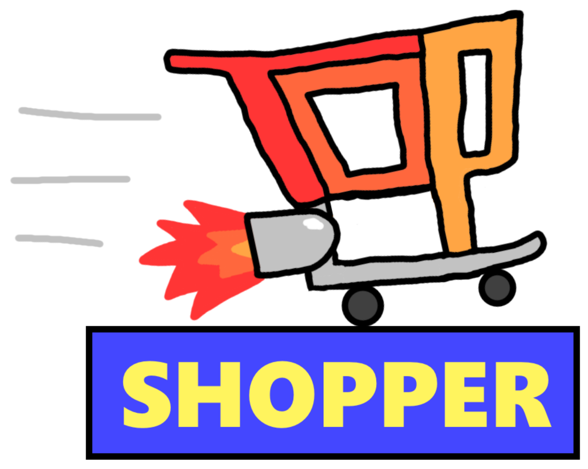

Top Shopper is a multiplayer arena driving game where players play as shopping carts in a supermarket competing to complete more shopping lists than the other shopping carts. This is achieved by driving around the arena and picking up the necessary items or ramming other shopping carts to make them drop their items so you can grab them for yourself.
The game was created from the ground up without the use of any game engines by a team of five, including myself, for CPSC 585 - Games Programming. I was the Lead Game Designer and Art Director for this project.
As the Lead Game Designer, I:
- Designed the base concept of shopping carts competing to complete shopping lists.
- Designed the item and shopping list mechanics, including how players would fill their shopping lists and which items would be available.
- Designed the arena and the separation of items into color-coded and themed areas of the grocery store.
- Designed the scoring system and how many points would be allotted to which actions, making sure to balance the system for fair games.
As the Art Director, I:
- Created every 2D and 3D asset used within the game, menus, and UI.
- Designed all 2D assets in Photoshop, including UI elements, menu screens, and textures used for the 3D models.
- Designed all 3D models in Blender, including the arena, obstacles, shopping carts, and grocery items, making sure to keep models as low-poly as possible due to programming limitations.
- UV-mapped the 2D textures to the 3D models in Blender.
Website created by Everest Wild with help from
w3.css